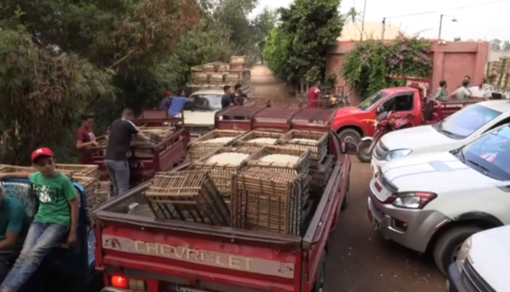

وسط حقول الياسمين التي تفوح رائحتها في ساعات الفجر الأولى، التقت الصحافة بـ"أم محمد"، إحدى العاملات في جمع زهور الياسمين بقرية شبرا بلولة، للحديث عن تفاصيل يومها، وطبيعة عملها، والتحديات التي تواجهها في واحدة من أهم القرى المنتجة للياسمين في مصر وعالميًا.
في البداية… ممكن تعرفينا بنفسك؟
أنا أم محمد، من قرية شبرا بلولة، بشتغل في جمع الياسمين من سنين طويلة جدًا، وده يعتبر شغلنا الأساسي وعيشنا كلنا هنا.
يومك بيبدأ إمتى بالظبط عشان تلحقي تجمعي الزهر؟
ببنبدأ من حوالي الساعة 3 الفجر، بننزل الأرض في العتمة وقبل ما الشمس تطلع خالص عشان الزهرة تفضل مقفولة وبصحة وتبقى في أحسن حال.
ليه لازم القطف والجمع يكون بدري وفي الفجر كدة؟
ﻷن الشمس لو طلعت وحميت على الياسمين، ريحته وورقته بتقل وجودته ونسبة الزيت العطري بتنزل، فلازم نلحق نقطفه وهو لسه فريش ومرطب بالندى.
طبيعة الشغل والجمع بتتم إزاي بالتفصيل؟
ببنقعد على الأرض ونمشي بين الشجر ونفضل نقطف الزهور واحدة واحدة بإيدينا، شغل متعب ومجهد جدًا وعايز صبر بال طويل، بنفضل شغالين كدة 4 أو 5 ساعات متواصلة.
هل الشغل ده بتعتبريه مرهق عليكي وعلى جسمك؟
جدًّا طبعاً… الظهر بيوجعنا من القعدة والوطية وإيدينا بتتجرح من الشوك والغصون، بس هنعمل إيه مفيش بديل وده أكل عيشنا.
متوسط الوزن اللي بتقدري تجمعيه في اليوم قد إيه؟
على حسب رزق اليوم والورد المفتح، بس الكمية والوزن اللي بنجمعه ونوزنه هي اللي بتحدد الفلوس والمكسب في الآخر.
طيب سعر كيلو الياسمين منكم للمصنع بيكون كام؟
السعر مش ثابت أبدًا، ساعات يبقى من 10 لـ 30 جنيه للكيلو، على حسب حركة السوق والمصانع والطلب.
شايفة إن العائد المالي مناسب للتعب والمجهود ده كله؟
لا طبعًا… التعب كبير ومجهد جدًا والمقابل قليل وبخس مقارنة باللي بنشوفه، بس بنقول الحمد لله دايماً ده رزقنا المكتوب.
هل باقي أفراد الأسرة بيساعدوكي وبيشتغلوا معاكي؟
آه طبعاً، بنشتغل كلنا كعيلة واحدة… أنا وبناتي وأولادي، عشان نجمع كمية أكبر ونقدر نجيب يومية تسندنا.
إيه شعورك وإنتِ عارفة إن الياسمين ده بيتصدر لفرنسا وبيتعمل منه أغلى البراندات والعطور في العالم؟
إحنا عارفين وسامعين إنه بيتباع غالي جداً برة، بس إحنا هنا في الأرض بناخد الفتات والمليم القليل… دي الحقيقة المرة اللي عايشينها.
المواسم وفترة شغل وجمع الياسمين بتكون إمتى في السنة؟
الموسم الأساسي والخير كله بيكون في الصيف، من حوالي شهر مايو لحد سبتمبر، وساعتها الشغل والنزول للأرض بيبقى يومي تقريباً ومن غير إجازات.
طيب في أوقات الشتاء والشهور اللي مفيهاش ياسمين بتشتغلوا في إيه؟
ببنشتغل في أي حاجة تانية تطلبها الأرض، زي جني محاصيل تانية أو شغل باليومية في الفلاحة، عشان نقدر نعيش ونكمل باقي السنة المستورة.
إيه هي أكبر المخاطر اللي بتقابلوها في المهنة دي؟
غير التعب والوطية، في برد وساقعة شديدة وقرصة في الفجر، وكمان ساعات حشرات أو تعابين في الأرض، وتعب وحساسية في الصدر من الرائحة النفاذة والقوية للياسمين مع الندى، غير وجع المفاصل والضهر والإيدين.
بتلبسوا إيه في إيديكم عشان تحموها أثناء القطف؟
في ناس بتلبس جوانتيات، بس أغلبنا بيحب يشتغل بإيده علطول عشان نكون سراع ونعرف نلمس ونقطف الزهرة الحساسة بسرعة من غير ما تتعور أو تبوظ.
لحد دلوقتي وبعد السنين دي كلها… لسه بتحبي ريحة الياسمين؟
ببصراحة بحبها طبعًأ، دي ريحة بلدنا وخيرنا وريحة حلوة تفتح النفس، بس ساعات لما بشمها بتفكرني بتعب الشغل والمجهود الشاق والوجع اللي بنشوفه كل يوم الفجر.
هل فكرتي تسيبي الشغل الشاق ده قبل كدة وتدوري على حاجة تانية؟
لا… صعب جداً أسيبه أو أغيره، دة شغلنا وأكل عيشنا اللي اتعلمناه من صغرنا وعيشنا وربينا أولادنا عليه ومفيش بديل غيره في البلد.
تتمني إيه للمستقبل ولأولادك؟
نفسي السعر يتحسن والمصانع تتقي ربنا فينا ويزودوا سعر الكيلو، ونحس إن تعبنا وصحيانا في الفجر والساقعة له مقابل عادل يقدر يعيشنا بكرامة.
"نجمع عطر العالم بأيدينا المجروحة فجر كل يوم، ونتمنى فقط عائداً عادلاً يناسب مجهودنا الشاق."



أترك تعليقاً...